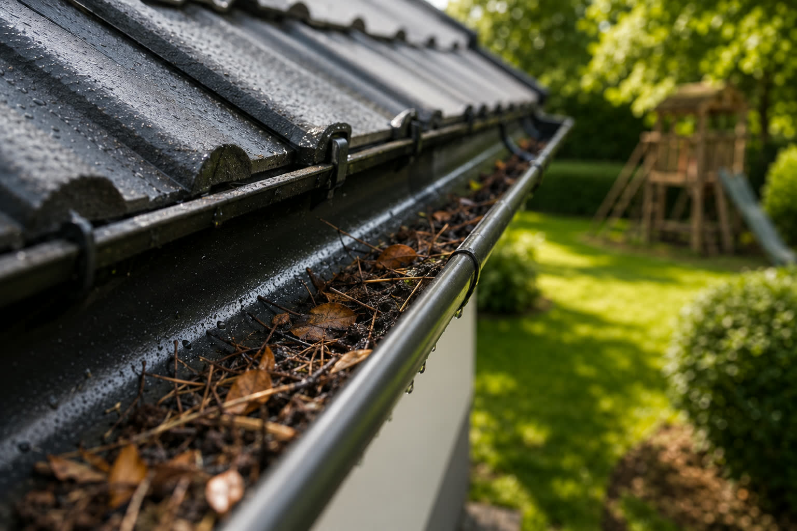
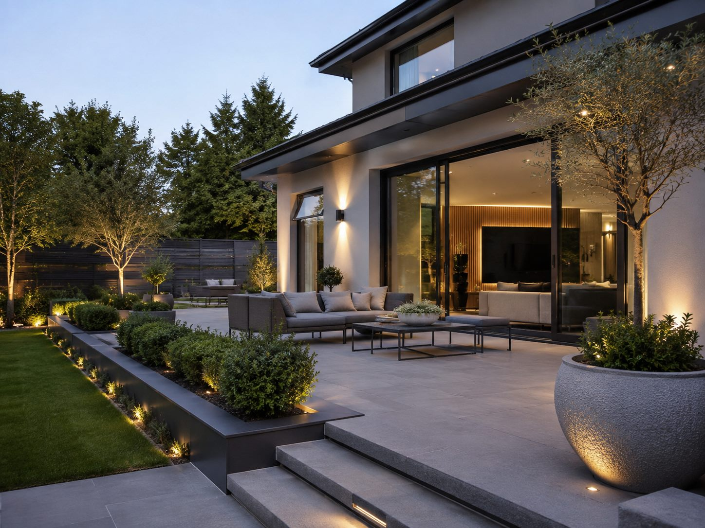

Udrażniamy rynny i rury spustowe — usuwamy liście, igliwie i osady, zanim woda zacznie przelewać się na elewację.
Zapchane rynny to jedna z najczęstszych przyczyn zawilgoconej elewacji i podmytych fundamentów. Liście, igliwie i mech blokują odpływ, woda przelewa się przez krawędź i zostawia zacieki, które z czasem zarastają glonami.
Usuwamy zanieczyszczenia z rynien i rur spustowych, przepłukujemy je i sprawdzamy drożność całego układu. Po zakończeniu prac zostawiamy teren uprzątnięty.
Każde zlecenie wyceniamy indywidualnie. Przy tej usłudze pod uwagę bierzemy przede wszystkim:
Im wyżej i trudniej o bezpieczne dojście, tym więcej czasu i sprzętu wymaga praca.
Zbity osad, mech i zalegające igliwie wymagają więcej pracy niż lekkie zabrudzenie.
Ukształtowanie dachu, zadrzewienie wokół budynku i pogoda wpływają na czas realizacji.

Napisz lub zadzwoń — przygotujemy indywidualną wycenę dopasowaną do Twojego terenu w powiecie grodziskim.